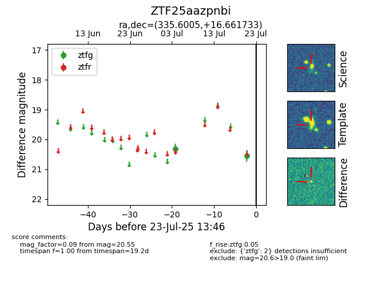

Target ZTF25aazpnbi at 2025-07-23 13:46, see:
FINK: fink-portal.org/ZTF25aazpnbi
Lasair: lasair-ztf.lsst.ac.uk/objects/ZTF25aazpnbi
ALeRCE: alerce.online/object/ZTF25aazpnbi
alt names
ZTF25aazpnbi (ztf,fink)
coordinates:
equatorial (ra, dec) = (335.6005,+16.66173)
galactic (l, b) = (79.0392,-33.22085)
photometry
last ztfg=20.55
2 ztfg detections
